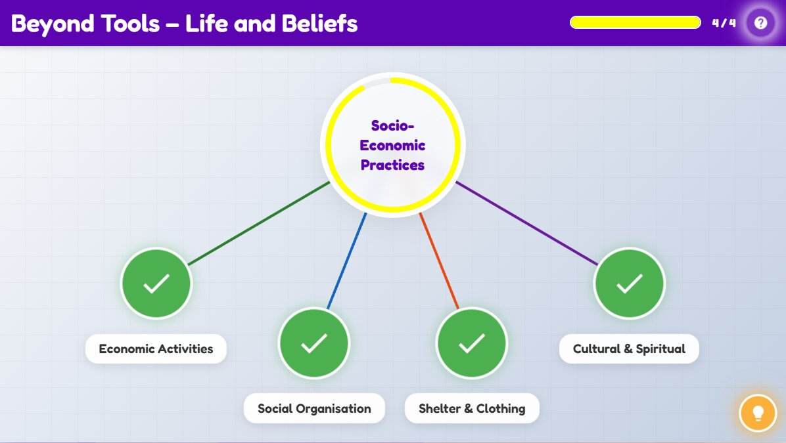

Beyond Tools – Life and Beliefs
Beyond Tools – Life and Beliefs
Socio-Economic
Practices
Practices
Activity Conclusion

Activity Introduction
Learner Instructions
Here is a hint
Era
Location View
Scenario Description